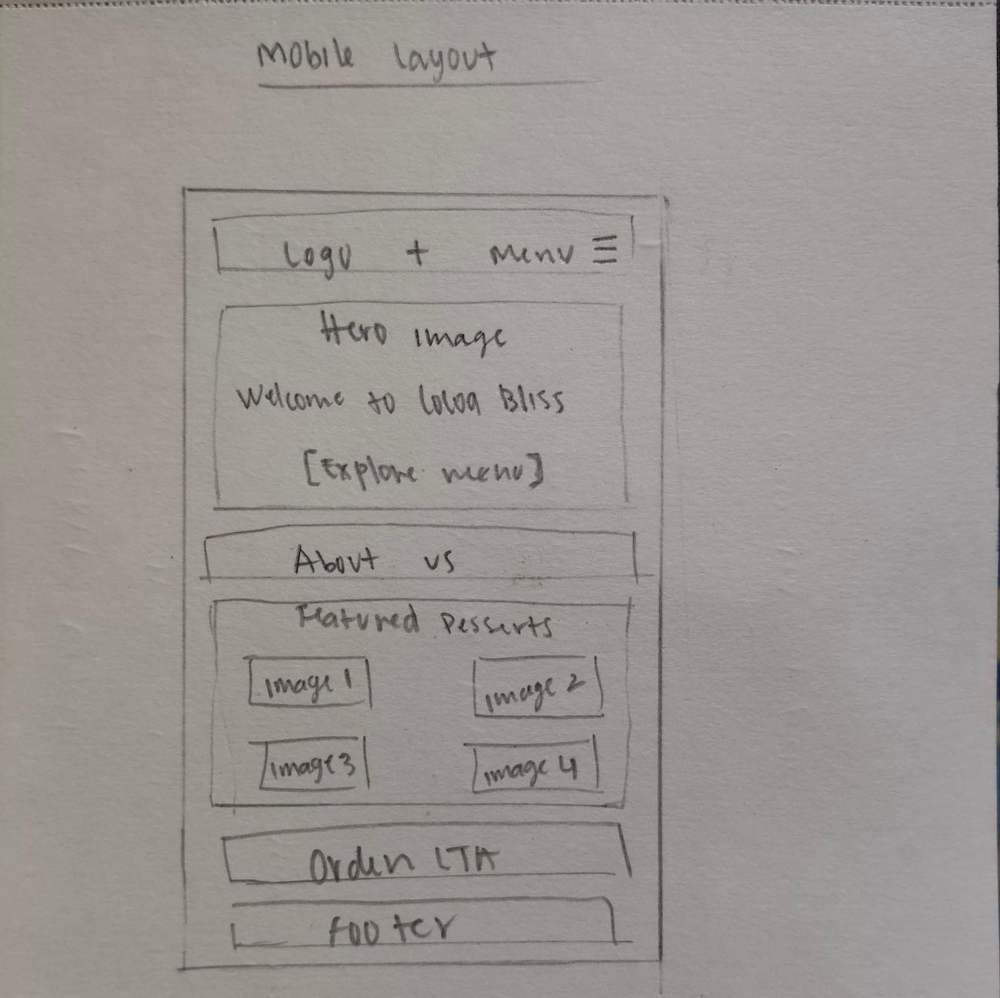
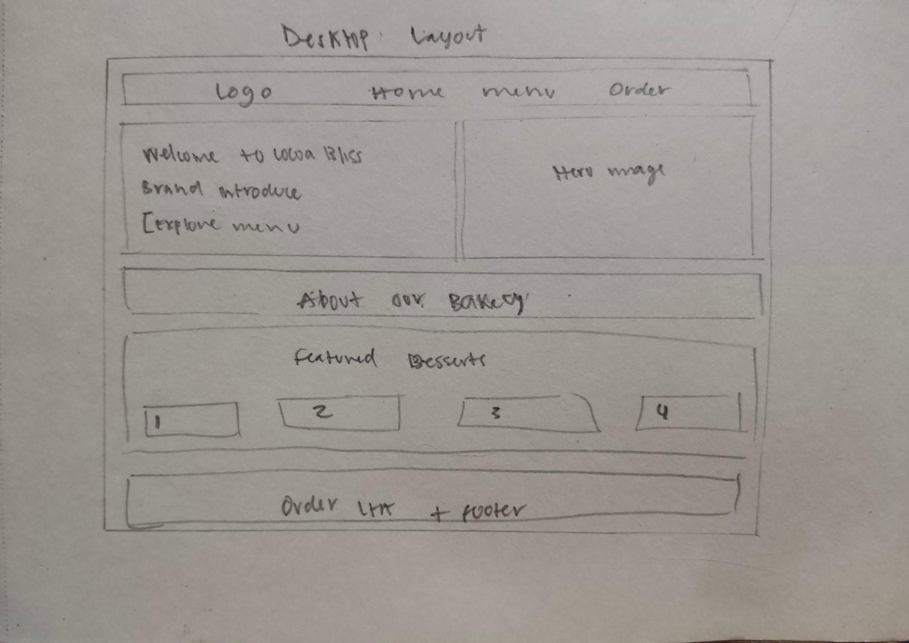

Site Name
Cocoa Bliss Bakery
The name Cocoa Bliss represents a homemade bakery brand focused on creating delicious desserts and sweet experiences. The word "Cocoa" connects the brand with baking and chocolate, while "Bliss" represents happiness and enjoyment. The name was chosen because it is memorable, welcoming, and flexible enough to represent a variety of desserts.
Site Purpose
Cocoa Bliss is a bakery website designed to showcase homemade desserts and provide visitors with an easy way to explore products and request orders. The website will feature a dessert catalog with product descriptions, categories, and prices. Visitors will also be able to discover featured products, learn about the bakery, and submit order requests through an online form.
Scenarios
- What types of desserts does Cocoa Bliss offer?
- How much do the desserts cost?
- Can I order desserts for birthdays or special occasions?
- How can I place an order or request a custom dessert?
Color Scheme
The Cocoa Bliss website will use a soft and warm color palette inspired by homemade bakery packaging and modern dessert branding.
Powder Blue
#B1C8EA — Main backgrounds and brand elements.
Butter Yellow
#FFEBAA — Buttons, highlights and decorative accents.
Dark Cocoa
#382322 — Headings, navigation and primary text.
Soft Cream
#FDEBDE — Cards, forms and content backgrounds.
Typography
Playfair Display
Used for headings, section titles and brand elements. This serif font gives the brand an elegant and distinctive appearance.
Lato
Used for body text, navigation, buttons and product descriptions. This sans-serif font provides a clean and readable design.
Wireframes
The following wireframes represent the planned homepage layout for mobile and desktop devices. They focus on content organization, navigation, and user experience before visual styling.
Mobile View

Desktop View
